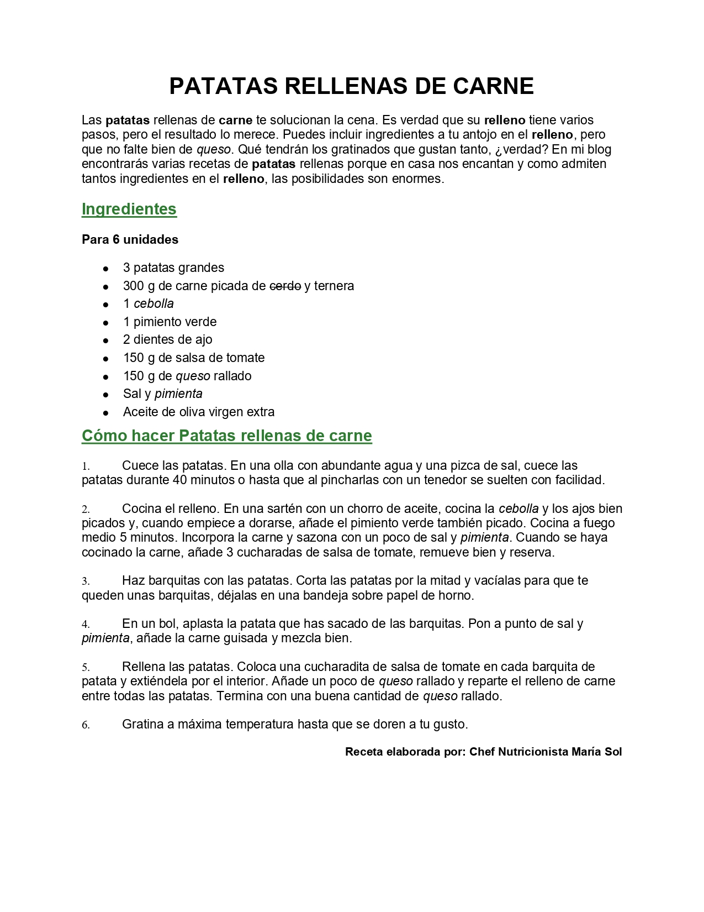

Caso: Recetario de Nutrición (Patatas Rellenas)
Configuración de márgenes, listas estructuradas, formatos de fuente específicos y espaciado de párrafo
Dar formato profesional a una receta culinaria en Microsoft Word a partir de un texto base sin formato (plantilla). El estudiante aplicará configuraciones de márgenes personalizados, estilos tipográficos específicos (negrita, cursiva, subrayado y tachado), organizará los ingredientes con la herramienta de viñetas, estructurará la preparación mediante numeración automática y establecerá un control preciso del espaciado de párrafo, logrando una puntuación de 1000 puntos en la validación del caso.
Material de Trabajo
Descarga la plantilla base en formato Word para iniciar el ejercicio:
Instrucciones Paso a Paso
Paso 1: Configuración de Márgenes Personalizados
Configura los márgenes manuales de la página en orientación vertical:
- Ve a la pestaña Disposición (o Formato en algunas versiones de Word).
- Haz clic en Márgenes y selecciona Márgenes personalizados... al final de la lista.
- En la pestaña Márgenes del panel emergente, introduce exactamente los siguientes valores:
- Superior: 2,0 cm
- Inferior: 2,0 cm
- Izquierdo: 2,5 cm
- Derecho: 2,5 cm
- Asegúrate de que la orientación seleccionada sea Vertical.
- Presiona Aceptar.
Paso 2: Tamaño de Hoja Carta y Tipografía General
Establece las características básicas del papel y la tipografía general de la receta:
- En la pestaña Disposición (o Formato), haz clic en el botón Tamaño y selecciona Carta (o Letter / 21.59 cm x 27.94 cm).
- Selecciona todo el contenido del documento usando la combinación de teclas
Ctrl + E. - En la pestaña Inicio > grupo Fuente, abre el selector de tipografías y selecciona Arial (o Calibri).
Paso 3: Título en Mayúsculas, Centrado, 20 pt y Negrita
Aplica formato destacado y limpia el título principal:
- Selecciona el título principal:
"Patatas rellenas de carne: presentación". - Modifícalo para que quede escrito completamente en MAYÚSCULAS:
"PATATAS RELLENAS DE CARNE". (Puedes usar el botón Cambiar mayúsculas y minúsculas en la pestaña Inicio > Fuente (icono Aa) y elegir MAYÚSCULAS, o usar el atajo de teclado:Shift + F3). - Borra la sección sobrante
": presentación"(o": PRESENTACIÓN") de modo que el título sea exactamente:"PATATAS RELLENAS DE CARNE". - Con el cursor en la línea del título, ve a la pestaña Inicio > grupo Párrafo y haz clic en el botón Centrar (o presiona
Ctrl + T). - En la pestaña Inicio > grupo Fuente, cambia el tamaño a 20 pt y aplica el formato Negrita (o usa
Ctrl + N).
Paso 4: Negritas y Cursivas en Palabras Clave
Enfatiza los términos clave del cuerpo de la receta:
- Busca y aplica Negrita (
Ctrl + N) a todas las ocurrencias de las siguientes palabras clave en el cuerpo del texto:patatasrellenocarne
- Busca y aplica Cursiva (
Ctrl + K) a todas las ocurrencias de los siguientes ingredientes clave en el texto:cebollapimientaqueso
- Nota: Asegúrate de revisar tanto el texto de presentación inicial como las secciones de ingredientes y de preparación.
Paso 5: Subrayado y Tachado
Aplica formatos avanzados a secciones e ingredientes específicos:
- Selecciona el título de sección
"Ingredientes"y haz clic en el botón S (Subrayado) o usa el atajoCtrl + S. - Realiza el mismo paso para el título de sección
"Cómo hacer Patatas rellenas de carne". - En la lista de ingredientes, localiza la palabra
"cerdo"en la línea"300 g de carne picada de cerdo y ternera". - Selecciona únicamente la palabra
"cerdo"y, en la pestaña Inicio > grupo Fuente, haz clic en el botón Tachado (icono ab con una línea horizontal).
Paso 6: Color de Fuente Verde en Títulos de Sección
Cambia el color de los títulos secundarios para mayor coherencia visual:
- Selecciona el título de sección
"Ingredientes". - En la pestaña Inicio > grupo Fuente, despliega el panel de Color de fuente y selecciona Más colores...
- En la pestaña Personalizado, introduce el código de color hexadecimal #2E7D32 (o valores RGB: Rojo 46, Verde 125, Azul 50) y presiona Aceptar.
- Repite este mismo proceso para aplicar el color verde oscuro al título de sección
"Cómo hacer Patatas rellenas de carne".
Paso 7: Viñetas Estructuradas en Ingredientes
Usa la herramienta automática para organizar la lista de ingredientes:
- Selecciona las 9 líneas de la lista de ingredientes (desde
"3 patatas grandes"hasta"Aceite de oliva virgen extra"). - Asegúrate de borrar cualquier guion manual (
-) que contuviera la plantilla al inicio de cada línea. - Con las líneas seleccionadas, ve a la pestaña Inicio > grupo Párrafo y haz clic en el botón Viñetas para aplicar viñetas automáticas de Word.
Paso 8: Lista Numerada Automática en Preparación
Estructura los pasos de la preparación usando numeración automática:
- Selecciona las 6 líneas correspondientes a la preparación de la receta.
- Asegúrate de borrar los números y puntos manuales (
1.,2., etc.) si existieran en la plantilla. - Con las líneas seleccionadas, ve a la pestaña Inicio > grupo Párrafo y haz clic en el botón Numeración para aplicar la numeración de lista automática.
Paso 9: Espaciado de Párrafos Antes/Después
Aplica un flujo limpio entre párrafos usando espaciados específicos en lugar de saltos en blanco vacíos:
- Selecciona todo el documento (
Ctrl + E). - Ve a la pestaña Disposición (o haz clic derecho y abre Párrafo...).
- En el grupo Párrafo, en la sección de Espaciado, introduce los siguientes valores exactos:
- Anterior: 6 pt
- Posterior: 12 pt
- Asegúrate de eliminar del documento cualquier línea en blanco adicional (saltos creados presionando repetidamente Enter).
Paso 10: Alineación de la Firma a la Derecha y Negrita
Formatea y ubica la línea de autoría al final de la receta:
- Selecciona la línea final de autoría:
"Receta elaborada por: Chef Nutricionista María Sol". - En la pestaña Inicio > grupo Párrafo, haz clic en el botón de Alinear a la derecha (o usa
Ctrl + D). - En la pestaña Inicio > grupo Fuente, aplica el formato Negrita (o usa
Ctrl + N).
Guarda el archivo finalizado como P06-Recetario-TuNombre.docx y preséntalo para su validación (puntuación objetivo: 1000 puntos).
Resultado Esperado
El documento finalizado debe verse similar a la siguiente imagen:
